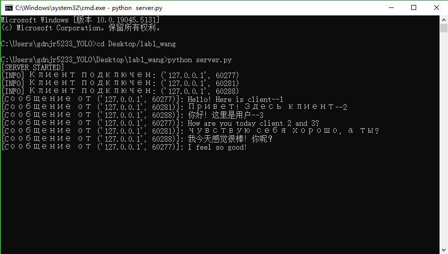

Лаб №2 - Работа с сокетами
Группа:D3310 Студент: Ван ЦзыНин
Введение
В рамках данной лабораторной работы мы рассмотрели основы работы с сокетами для создания простого многопользовательского чата. Сокеты используются для установления соединений между клиентами и серверами, что является основой сетевого взаимодействия в современных приложениях.
Описание реализации
Сервер
Серверная часть реализована с использованием стандартного модуля socket и threading для многозадачности. Сервер слушает указанный порт и обрабатывает соединения от нескольких клиентов, пересылая полученные сообщения всем подключенным пользователям.
Клиент
Клиентская часть подключается к серверу и позволяет пользователю отправлять сообщения. Для обеспечения параллельной работы клиент принимает сообщения в одном потоке, а в другом потоке отправляет сообщения на сервер.
Многозадачность
Для обработки нескольких клиентов одновременно используется модуль threading, который позволяет серверу и клиентам работать в многозадачном режиме. Каждый новый клиент обрабатывается в отдельном потоке.
Выполнения
Кода сервера для многопользовательского чата
import socket
import threading
# 定义全局变量
clients = []
# 处理客户端连接的函数
def handle_client(client_socket, client_address):
print(f"[INFO] Клиент подключен: {client_address}")
clients.append((client_socket, client_address))
while True:
try:
message = client_socket.recv(1024).decode("utf-8")
if message:
print(f"[Cообщение от {client_address}]: {message}")
broadcast(message, client_address)
except:
print(f"[Отключение клиента]: {client_address}")
clients.remove((client_socket, client_address))
client_socket.close()
break
# 广播消息的函数
def broadcast(message, sender_address):
for client_socket, client_address in clients:
if client_address != sender_address: # 不发送给消息的发送者
try:
client_socket.send(f"\n[{sender_address[1]}]: {message}".encode("utf-8"))
except:
client_socket.close()
clients.remove((client_socket, client_address))
# 主函数
def main():
server = socket.socket(socket.AF_INET, socket.SOCK_STREAM)
server.bind(("0.0.0.0", 12345)) # 监听端口
server.listen(5)
print("[SERVER STARTED]")
while True:
client_socket, client_address = server.accept()
threading.Thread(target=handle_client, args=(client_socket, client_address)).start()
if __name__ == "__main__":
main()
Кода клиента для многопользовательского чата
import socket
import threading
# 处理接收消息的函数
def receive_messages(client_socket):
while True:
try:
message = client_socket.recv(1024).decode("utf-8")
if message:
print(message)
except:
print("[Соединение закрыто]")
client_socket.close()
break
# 主函数
def main():
client = socket.socket(socket.AF_INET, socket.SOCK_STREAM)
client.connect(("127.0.0.1", 12345)) # 连接到服务器
threading.Thread(target=receive_messages, args=(client,)).start()
while True:
message = input("Вы: ")
if message.lower() == "exit":
client.close()
break
client.send(message.encode("utf-8"))
if __name__ == "__main__":
main()
Интерфейс сервера

Интерфейс клиента

Заключение
Лабораторная работа помогла понять основные принципы работы с сокетами и многозадачностью в Python. Эти знания являются основой для создания более сложных сетевых приложений.